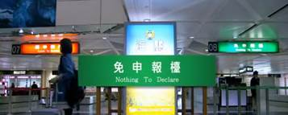

Transportation
Access
There are two international airports in Taiwan:- Taiwan Taoyuan International Airport (TPE)
The Taipei TTY Airport is the main gateway of Taiwan. It can be accessed via over 190 non-stop and direct flights from 56 major cities throughout the world. The carriers are Air Macau, Air New Zealand, Air Nippon, Angkor Airways, Asiana Airlines, Cathay Pacific, China Airlines, Eva Airways, Continental, Dragon Air, Japan Asia Airways, Korean Air, Far Eastern Air, Northwest, KLM, Malaysia Airlines, Mandarin Airlines, Palau Trans, Pacific Airlines, Philippine Airlines, Thai Airways, Transasia Airways, United Airlines and Vietnam Airlines. - Taipei Songshan Airport (TSA)
Situated in Metropolitan Taipei, the Taipei International Airport is the hub of domestic air transportation. It is easily accessible from the town centers.
| Arrival at the International Airport |
| It is required to go through the following steps in order to enter Taiwan: “Please make sure you have a valid visa to enter Taiwan”
 |
Transport between Taiwan Taoyuan (TTY) International Airport and Taipei
Taxis queue outside the Arrival Halls of both terminals. Airport Taxis charge according to the meter plus a 50% surcharge (highway tolls not included). Typical fare to Taipei is around NT$1,100Four bus companies now provide frequent service between TTY International Airport and important destinations around Taipei everyday in every 30 to 40 minutes. Costs are approximately NT$110~140 (US$4~5), takes about 60 to 90 minutes. The bus station is on the southwest side of the Arrival Passenger Reception Area in Terminal I, and on the northeast side of the Arrival Passenger Reception Area on the first floor in Terminal II. For more information, please check the website: http://www.taoyuanairport.gov.tw
Transport in Taipei
-
Mass Rapid Transit System (MRTS)
The system operates according to a spoke-hub distribution paradigm, with six lines running radically outward from central Taipei. The metro system operates from 6 am to midnight daily with extended services during special events. Trains operate at intervals of 1.5 to 15 minutes depending on the line and time of day. A “Single-journey Ticket” costs between NT$20 to NT$65 depends on distance. A NT$200 One-day Pass purchased from a service booth will allow unlimited travel among all MRT lines within one day. Smoking, eating, drinking or gum chewing are strictly prohibited on all MRT trains.
For more information please visit: Metro Taipei (http://english.metro.taipei/)
- Bus
Taipei Bus Station officially opened at 12:00 a.m. on August 19. The Taipei City Public Transportation Office reported that as of 10:30 on the opening day, the station had sold a total of 3,502 tickets and smoothly served 560 intercity buses, including 126 arrivals and 440 departures.
For more information please visit: Taipei Bus Information
(http://www.taipeibus.taipei.gov.tw/TPBUS.aspx?lang=eng)
- Taxi
Taipei has a huge fleet of taxis. Charges are NT$70 for the first 1.5km and NT$5 for each additional 300 meters. An additional NT$5 is charged for every two minutes of waiting, and a NT$20 charge is added to fares between 11 p.m. and 6 a.m. Tips are not required. - U Bike
The Department of Transportation, Taipei City Government (hereinafter the Authority), in order to encourage citizens to use bikes as short-distance transit vehicles, launched the Program of the “Establishment, Operation and Management of the Bike Sharing System”, in the hope that by equipping a urban bike lane network with a bike station service, encouraging citizens to use low-pollution and low-energy-consumption Bike Sharing as short-distance transit vehicles and reducing and replacing personal possession and use of motor vehicles, traffic congestion, environmental pollution and energy loss in the city will be improved. In the hope of elevating life and culture in the city and in response to a global trend of energy conservation and carbon mitigation, the Taipei City Government, in collaboration with Giant Taiwan, initiated the Taipei Bike Sharing System Service Plan, also known as “YouBike ”.For more information please visit: http://taipei.youbike.com.tw/en/index.php
-
EasyCard
All registrant will receive an EasyCard, a contactless smartcard system operated by the EasyCard Corporation for payment on the Taipei Metro, Taipei Public Bus, YouBike and designated convenience stores.To use it for the first time, please ensure to add value at designated location such as the Taipei Metro Station or convenience stores carrying the 「」or「」 logo (7-ELEVEN, FamilyMart, Hi-Life and OK Mart), and the minimum amount of value adding is NTD100.
For more information please visit: https://www.easycard.com.tw/english/easycard/index.asp
Useful Links
Ministry of Foreign Affairs, R.O.C.Taiwan Travel Information
Taiwan Taoyuan International Airport
Taipei SongShan Airport
Taipei City Government
Tourism Bureau
Useful Download
Direction CardUseful Mandarin Phrase
Taipei City Map